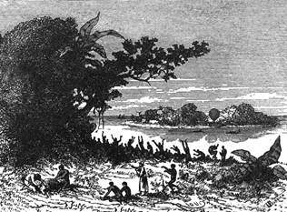
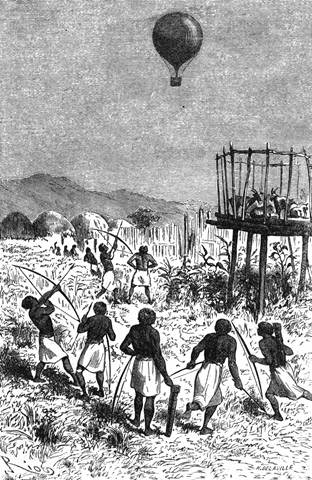

Přelet přes úžinu. – Mrima. – Výrok Dickův a návrh Joův. – Předpis na kávu. – Uzaramo. – Nešťastný Maizan. – Hora Duthumi. – Mapy doktorovy. – Noc na nopálu.
Vzduch byl čistý, vítr mírný; Viktorie vystoupila téměř kolmo do výše 1500 stop, což projevilo se klesnutím o dva palce bez dvou čárek[28] v tlakoměrném sloupci.
V této výšce silnější proud unášel balon k jihozápadu. Jak velkolepé divadlo rozvinulo se před zraky cestovatelů! Ostrov Zanzibar jevil se celý očím, obrážeje se temnější barvou jako na širé ploše; pole nabývala vzhledu různobarvých vzorků; velké skupiny stromové svědčily, kde jsou lesy a houštiny.
Obyvatelé ostrova vypadali jako hmyzové. Provolávání a hulákání zanikalo ponenáhlu v ovzduší, a jediné dělové výstřely s lodí chvěly se ve vniterní dutině balonu.

Tu se negři pustili do zuřivého hýření.
„Jak je to vše krásné!“ zvolal Joe přerušiv po prvé mlčení. Nedostalo se mu odpovědi. Doktor byl zaměstnán tím, že pozoroval odchylky tlakoměrné a zaznamenával si všeliké podrobnosti vzestupu.
Kennedy se díval, a oči mu nestačily, aby vše shlédl.
Ježto paprsky sluneční přispívaly pomocí dmuchavce, vzmohlo se napětí plynu. Viktorie dostoupila výše 2500 stop.
Resolute vypadal na pohled jako pouhý člun, a pobřeží africké rýsovalo se na západě nesmírným pruhem pěny.
„Což nemluvíte?“ ozval se Joe.
„Díváme se,“ odpověděl doktor zamířiv dalekohled na pevninu.
„Co na mně jest, musím mluvit.“
„Máš dovoleno, Joe, mluv do chuti.“
A Joe spotřeboval sám pro sebe strašlivou sílu citoslovců. Och! ha! ach! hrnuly se mu bez přítrže ze rtů.
Za přeletu přes moře uznal doktor radným setrvati v této výšce; mohlť pozorovati pobřeží větším rozsahem; teploměr a tlakoměr, zavěšené v pootevřeném stanu, byly neustále cílem jeho pohledu; druhý tlakoměr, umístěný zevně, měl konati službu za nočních hlídek.
Než uplynuly dvě hodiny, dospívala Viktorie, unášená rychlostí téměř třinácti kilometrů, patrně nad pobřeží. Doktor odhodlal se přiblížiti k zemi; zmírnil plamen dmuchavky, a balon snesl se za nedlouho na tři sta stop od země.
Tíhl nad Mrimou, jak slove tato část východního pobřeží afrického; husté obruby kořenovníků chránily jeho břehy; v nízkém přílivu bylo viděti jich spletité kořeny, ohlodané zubem indického okeanu. Jespy, navalené kdysi na rozhraní mezi mořem a zemí jevily se oblými rysy na obzoru, a hora Nguru vypínala své témě na severozápadě.
Viktorie míjela ves, kterou doktor dle mapy poznal za Kaolu. Veškero shluklé obyvatelstvo ryčelo hněvem a strachem; šípy vystřelovány nadarmo na tuto vzdušnou obludu, jež vznášela se velebně nad vším tím malomocným vztekem.
Vítr vanul na jih, ale doktorovi nevadil tento směr; mohlť tak aspoň sledovati cestu, kterou se ubírali setníci Burton a Speke.
Kennedy stal se posléze rovněž hovorným jako Joe; předstihovali se vzájem výkřiky obdivu.
„Pryč s dostavníky!“ pravil jeden.
„Pryč s parníky!“ zvolal druhý.
„Pryč se železnicemi!“ přizvukoval Kennedy, „po kterých člověk jezdí a krajin nevidí.“
„Balon! to je něco!“ liboval si Joe; „člověk ani necítí, že se pohybuje, a příroda sama se snaží, aby se rozvinula před jeho očima!“
„Jaká to podívaná! jaké divy! jaká rozkoš! sen ve visuté rohoži!“
„Což abychom posnídali?“ navrhl Joe, v němž svěží vzduch vzbudil chuť.
„To je myšlenka, hochu!“
„Ó! s kuchyní nebude valných potíží! něco sucharův a konservo vaného masa.“
„A kávy dle libosti,“ doložil doktor. „Dovoluji ti vypůjčit si trochu horka od mé dmuchavky; zbude jí ho dost. A tím způsobem nebude se nám nikterak obávati požáru.“
„To by bylo hrozné,“ lekal se Kennedy. „Vždyť je to, jako bychom měli nad sebou prachárnu.“
„Ani zdání,“ odpověděl Fergusson; „kdyby vodík na krásně chytil, shořel by ponenáhlu, a my bychom klesli na zemi, což by nám přišlo nevhod; ale nestrachuj se, náš balon je neprodyšně uzavřen.“
„Jezme tedy,“ řekl Kennedy.
„Zde, pánové,“ pravil Joe; „a následuje vašeho příkladu posloužím vám kávou, o níž mi povíte své mínění.“
„Pravda jest,“ ozval se opět doktor, „že Joe mimo tisíceré jiné ctnosti má znamenité vlohy k vaření tohoto lahodného nápoje; bere naň směs různých druhů, které mi nikdy nechtěl vyjeviti.“
„Nuže, pane, poněvadž jsme v širém povětří, mohu se vám, tuším, svěřit s tím předpisem. Je to prostě směs stejných dílů mokky, bourbonu a rio-nuezu.“
Za nějakou chvíli nality tři kouřící se koflíky, jimiž zapito jadrné snídaní okořeněné dobrou mírou stolovníků; po té zaujal každý opět své pozorovací stanovisko.
Kraj honosil se nesmírnou úrodností. Úzké, křivolaké pěšiny vinuly se pod zelenými klenbami. Letěli nad poli osetými tabákem, kukuřicí, ječmenem plně uzrálým; tu a tam prostírala se rýžoviště s rovnými stonky a květy barvy purpurové. Viděli ovoce a kozy zavřené ve velkých klecích vyvýšených na kolech na ochranu proti chrupu levhartovu. Bujné rostlinstvo vypínalo se na této štědré půdě. V četných dědinách opakovaly se výjevy ryku a zmatku, když se objevila Viktorie, a doktor Fergusson měl se bedlivě na pozoru, aby nesestoupil v dostřel šípův; obyvatelé shluklí kolem svých chat těsně skupených stíhali dlouho cestovatele svým marným proklínáním.
O poledni určil doktor poradiv se s mapou, že jest nad Uzaramem.[29] Krajina byla porostlá kokosníky, dýněmi a bavlníky, nad nimiž Viktorie zdála se laškovati. Joe shledal toto rostlinstvo zcela přirozeným, jakmile šlo o Afriku. Kennedy viděl zajíce a křepelky, kteří si nežádali nic lepšího než dobrou ránu z pušky; leč bylo by se marně plýtvalo prachem, poněvadž nemohla se zvěř sebrati.
Vzduchoplavci pluli s rychlostí devatenácti kilometrů za hodinu a octli se v brzku na 38° 20' délky nad vsí Tundou.
„Tam,“ praví doktor, „byli Burton a Speke zachváceni prudkou zimnicí a nějaký čas neměli za jiné, nežli že jest konec jich výpravě. Byli jen málo vzdáleni od pobřeží a přece již únava a újmy těžce na ně doléhaly.“
V této končině panuje vskutku věčná malarie; doktor chtě se uvarovati jejích účinků byl nucen povznésti balon nad nakažliviny této vlhké půdy, jejíž výpary ssálo žhoucí slunce.
Časem uzřeli karavanu, ana odpočívá v „kraalu“ vyčkávajíc večerního chladu, aby se hnula dále pochodem. Kraaly jsou prostranné ohrady obehnané ploty a džunglemi, kam se obchodníci uchylují na ochranu nejen proti šelmám, nýbrž i proti tamním loupeživým kmenům. Domorodci spatřivše Viktorii utíkali a prchali na vše strany. Kennedy přál si je pozorovati z blízka; než Samuel odporoval stále tomuto úmyslu.
„Pohlaváři jsou ozbrojeni puškami,“ pravil, „a náš balon byl by terčem, jejž by kulka snadno zasáhla.“
„Což by průvrt kulkou způsobil pád?“ otázal se Joe.
„Hned ne; ale takový průvrt rozšířil by se za nedlouho na velkou trhlinu, kterou by unikl všechen náš plyn.“
„Tu se potážeme s dobrou, zůstaneme-li v uctivé vzdálenosti od těchto nevěřících. Co si asi myslí, když nás tak vidí, jak se vznášíme v povětří? Vím jistě, že by se nám rádi klaněli.“
„Ať se nám klanějí,“ odtušil doktor, „ale z dáli. To je vždycky na prospěch. Hle, krajina nabývá už jiné tvářnosti; vesnice jsou řídší; mangivy zmizely; rostou jen až po tuto šířku. Půda se krabatí a věstí blízké pohoří.“
„Opravdu,“ prohodil Kennedy, „zdá se mi, jako bych viděl nějaké kopce na této straně.“

Domorodci, spatřivše Viktorii, utíkali.
„Na západě… to jsou první horská pásma urizarská, bezpochyby hora Duthumi, za kterou doufám, že se budeme moci bezpečně zastavit na nocleh. Rozdmýchám hned silněji plamen dmuchavky: jsme nuceni trvati ve výši pěti až šesti set stop.“
„Byla to od vás věru dobrá myšlenka, pane,“ ozval se Joe; „řízení není ani nesnadné ani namáhavé, zatočí se kohoutkem a už je to.“
„Tady je nám volněji,“ pravil lovec, když balon vystoupil; „odraz slunečních paprskův od toho červeného písku byl již nesnesitelný.“
„Jaké to nádherné stromy!“ zvolal Joe; „je to sice zcela přirozené, ale překrásné! Na les nebylo by jich potřebí ani tucet.“
„To jsou baobaby,“ odpověděl doktor Fergusson; „vizte, kmen jednoho z nich má asi sto stop v objemu. Možná, že u paty právě tohoto stromu zahynul roku 1845 Francouz Maizan, neboť jsme nade vsí Deželamorou, kam se sám odvážil; byl jat náčelníkem této krajiny, přivázán k patě baobabu, a sveřepý ten černoch uřezal mu pomalu údy, zatím co zazníval válečný zpěv; jak mu nařízl hrdlo, ustal, aby si nabrousil otupený nůž, a utrhl nešťastníkovi hlavu dříve, než byla uříznuta! Tomu nebohému Francouzovi bylo teprve dvacetšest let!“
„A Francie nepomstila se za podobný zločin?“ otázal se Kennedy.
„Francie ozvala se proti tomu; zaid zanzibarský učinil vše, aby se zmocnil vraha, leč nepodařilo se mu.“
„Přeju si, abych se cestou nezastavil,“ řekl Joe; „vystupme, pane, vystupme, mám-li u vás víru.“
„Tím raději, Joe, že hora Duthumi vystává před námi. Jsou-li mé výpočty správné, přeletíme ji do sedmi hodin večer.“
„Což nepocestujeme v noci?“ zeptal se lovec.
„Pokud možná, ne; šetříce opatrnosti a bdělosti mohli bychom bez nebezpečí, ale nestačí přeplouti Afriku, třeba ji i viděti.“
„Až dosud nemáme si do čeho stýskat, pane. Místo pouště nejobdělanější a nejúrodnější země na světě! Pak věřte zeměpiscům!“
„Počkej, Joe, počkej; později uvidíme.“
Okolo půl sedmé večer octla se Viktorie naproti hoře Duthumi; aby se přes ni přenesla, musila vystoupiti více než na tři tisíce stop, a za tou příčinou bylo doktorovi zvýšiti teplotu jen o osmnáct stupňů. Bylo vskutku lze říci, že řídí balon rukou. Kennedy hlásil mu, přes jaké překážky dlužno přeletěti, a Viktorie plynula vzduchem nad samým pohořím.
V osm hodin sestupovala po protějším úbočí, jehož svah byl nenáhlejší; kotvy vyhozeny z loďky, a jedna z nich, vrazivši do větví obrovského nopálu, mocně v nich utkvěla. Joe se šplhal hned po provaze a připevnil ji co nejdůkladněji. Spustili mu hedvábný řebřík, i vylezl zas obratně do loďky. Vzducholoď téměř se ani nehýbala, jsouc chráněna od východních větrů.
Přistrojena večeře; cestovatelé, rozjaření vzdušnou procházkou, způsobili ve svých zásobách nemalý úbytek.
„Jakou cestu jsme dnes vykonali?“ otázal se Kennedy polykaje hrozná sousta.
Doktor určil polohu vypozorovav měsíc a řídě se výtečnou mapou, která mu byla průvodcem; náležela k atlasu „Der neuesten Entdeckungen in Afrika“, vydanému v Gothě jeho učeným přítelem Petermannem, jejž mu tento zeměpisec byl zaslal. Tento atlas měl doktorovi konati službu po celou cestu, neboť podával cestu Burtona a Spekea k velkým jezerům, Sudan podle doktora Bartha, dolejší Senegal podle Viléma Lejeana a deltu nigerskou od doktora Baikie.[30]
Fergusson byl si rovněž opatřil dílo, v němž byly sloučeny v jediný celek veškery vědomosti nabyté o Nilu, pod názvem:
„The sources of the Nile, being a general survey of the basin of that river end of its head stream, with the history of the Nilotic discovery by Charles Beke, Th. D.“[31]
Měl také výtečné mapy vydané ve „Věstníku zeměpisné společnosti londýnské“, i nemohlo jeho zřeteli ujíti nižádné místo probadaných krajin.
Měře na mapě shledal, že urazil dva stupně šířky čili sto devadesáttři kilometry na západ.
Kennedy podotekl, že cesta směřovala k poledni. Ale s tímto směrem byl doktor spokojen chtě, pokud možná, poznati cesty svých předchůdců.
Usnesli se na tom, že rozdělí noc na tři hlídky, aby jeden po druhém mohl bdíti nad bezpečností ostatních. Doktor měl býti na stráži od devíti hodin, Kennedy od půlnoci a Joe od tří hodin ráno.
Kennedy a Joe zahalili se tudíž do pokryvek, a natáhše se pod stanem spali pokojně, zatím co doktor Fergusson bděl.